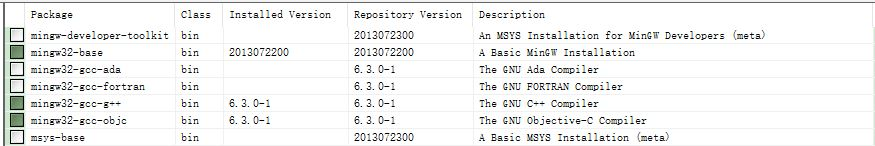

Install MinGW by installer
- Download and run mingw–get–setup.exe
- Run mingw–get–setup.exe
- Choose "base" "g++" "objc" component in Installation Manager
- Click "Installation" –> "Apply all"
- Add
MinGW/binto path - Check version

我的电脑 –> 高级系统设置 –> 环境变量 –> path
> gcc -v
Using built-in specs.
COLLECT_GCC=gcc
COLLECT_LTO_WRAPPER=c:/mingw/bin/...
Target: mingw32
Configured with: ../src/gcc-6.3.0/conf....
Thread model: win32
gcc version 6.3.0 (MinGW.org GCC-6.3.0-1) Install MinGW–w64 by offline package
- Download x86_64–posix–seh
- https://sourceforge.net/projects/mingw–w64/files/ MinGW
- x86_64–8.1.0–release–posix–seh–rt_v6–rev0.7z
- unzip it and copy to
C:\ - Add
mingw64/binto path - Check version
> gcc -v
Using built-in specs.
COLLECT_GCC=gcc
COLLECT_LTO_WRAPPER=C:/mingw64/bin..
Target: x86_64-w64-mingw32
Configured with: ../../../src/gcc-8.1.0/
Thread model: posix
gcc version 8.1.0 (x86_64-posix-seh-rev0, Built by MinGW-W64 project) Test
Issue unimplemented: 64–bit mode not compiled in xxx
Reinstall MinGW x64